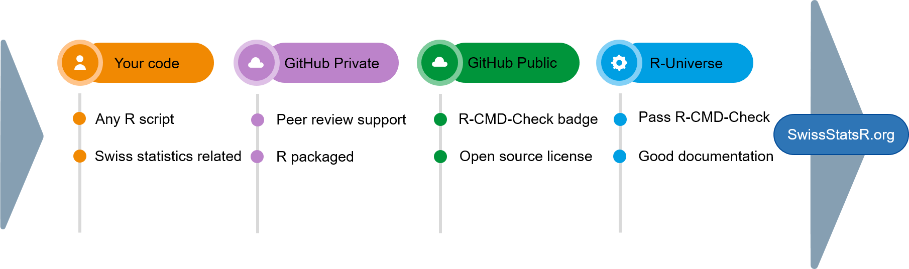

Collaboration workflow
This document presents the phases of the SwissStatsR collaboration workflow.
The phases of a submission

Click here to make a submission
1. Your Code
2. GitHub Private
- Once your submission is accepted, peer reviewing starts with SwissStatsR members.
- You should have an account on GitHub.
- Hosting on our SwissStatsR GitHub is recommended but not mandatory.
3. GitHub Public
- R packages and R projects (see next sections) can be hosted on any GitHub repository, including SwissStatsR GitHub, or another DevOps public provider1.
- They should have an GitHub Action R-CMD-Check badge:
- They should have an open source license such as MIT, GPL or LGPL:
- for example:
usethis::use_gpl3_license()
- for example:
4. R-Universe
- Open source R package or R project should pass R-CMD-Check.
- They should be well documented.
- Unit tests are recommended but not mandatory.
- Adding a SwissStatsR badge is optional.
5. SwissStatsR.org
- Once the R package or R project hit the SwissStatsR Universe, it will be added on SwissStatsR.org.
6. Promotion (optional)
Contact information can be found in the About section.
Submit an R package
Your R package should follow best practices. See “R package (2e)” free online book.
The R package should have an open source license such as MIT, GPL or LGPL:
usethis::use_gpl3_license(),usethis::use_mit_license(), etc.
The R package should have an GitHub Action R-CMD-Check badge:
usethis::use_github_action()
SwissStatsR hosts only R projects passing all R-CMD-Checks.
Submit an R project
If you have R scripts related to Swiss statistics which could be useful to the R community, you can submit an GitHub repository containing R scripts.
The following GitHub repository is an example of an SwissStatsR project:
- https://github.com/SwissStatsR/submit
DESCRIPTION file
Your repository should contains metadata about your project in a DESCRIPTION file. Even if your project is not an R package, this file helps us standardize metadata collection among all SwissStatsR projects, such as contacts and licensing.
You can create the DESCRIPTION file with:
usethis::use_description()Then you should fill DESCRIPTION file. You can use utility functions as helpers, such as:
- add authors:
usethis::use_author() - add license:
usethis::use_gpl3_license(),usethis::use_mit_license(), etc.
We ask you to also add R package dependencies of your R project. As a helper, you can use usethis::use_package().
/R folder
We strongly recommend to have all the R function in the /R folder, following R package guidelines. Some reasons are:
- With
devtools::load_all(), it is really easy to setup the environment. - Everyone knows where to find the functions.
- This folder structure is the standard for R packages, but also for other projects such as
golem(R shiny) andtargets.
/tests folder
All tests should be in the /tests folder. More information about tests can be found (here)[https://r-pkgs.org/testing-basics.html].
Other files
Other R scripts and files can be added to the /inst and /scripts folders.
If for some reasons the R projects cannot follow an R package structure, all the other files and folders should be listed in the .Rbuildignore file. For this you can use:
usethis::use_build_ignore()If you R project contains R functions and tests, we recommend you to add them in the “R” and “tests” folder and follow R package guidelines.
.gitignore file
You can avoid sharing specific files and folder using the .gitignore file, in particular sensitive files.
Please note as you are the only responsible of the data shared on GitHub.
renv
We strongly recommend you to use renv to track the dependencies of your R project with snapshots. Snapshots should be done using the most R version possible.
renv::init()You can choose to add a specific badge in the README showing your R project is fully reproducible using renv.
Checks
Even if your R project is not an R package, we ask you to add GitHub Actions R-CMD-Check to check if your DESCRIPTIONS and .Rbuildignore files are correctly filled. For this, please use usethis::use_github_action(name = "check-standard")
You can locally check your R project R-CMD-Check results with: devtools::check().
SwissStatsR hosts only R projects passing all R-CMD-Checks.
Footnotes
The use of GitHub is recommended to ease collaboration and leverage R-CMD-Check GitHub Actions.↩︎